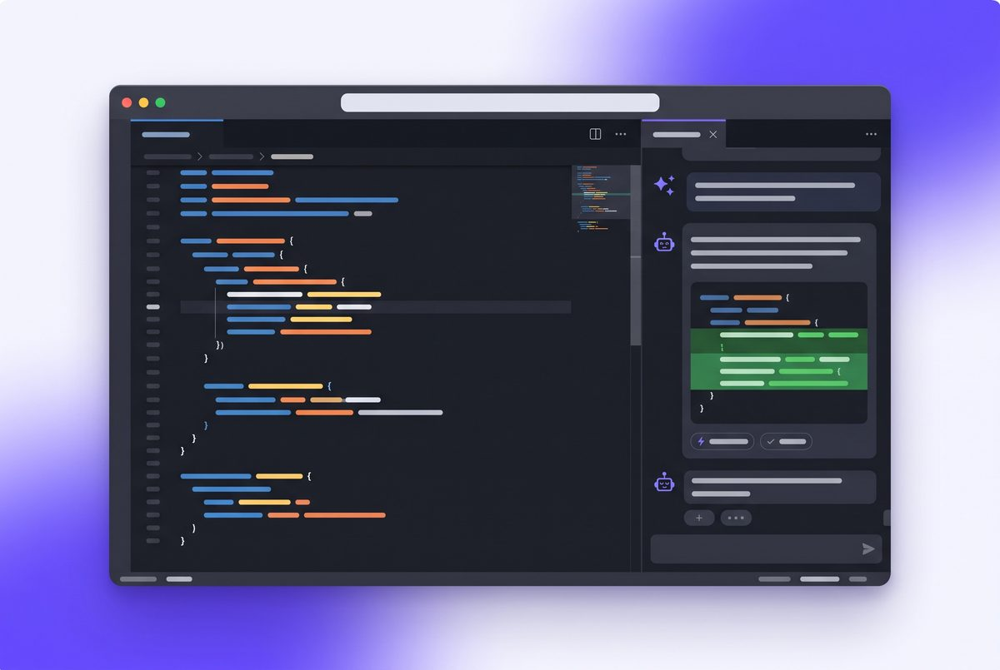
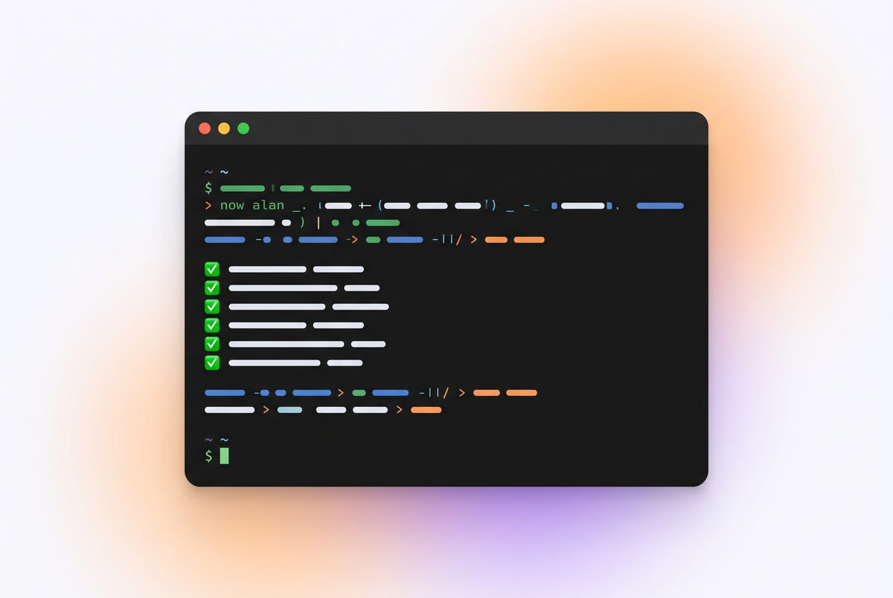

GitHub Copilot
Asistente de GitHub dentro de VS Code. Sugiere código mientras escribes y tiene un chat para pedir cambios.
Sitio oficial ↗// Inicio / Herramientas
Existen tres grandes tipos: editores de código con IA integrada, asistentes que trabajan desde la terminal y plataformas que crean aplicaciones completas desde el navegador.

// Editor con IA
Un editor basado en Visual Studio Code que integra la IA en todo el flujo: se le puede pedir que cree archivos, explique código o corrija errores en todo el proyecto con una sola instrucción.
// Asistente en terminal
Un asistente de Anthropic que trabaja directamente sobre la carpeta del proyecto: lee los archivos, propone cambios, ejecuta comandos y puede ayudar a publicar el trabajo en GitHub.

// Más opciones
Asistente de GitHub dentro de VS Code. Sugiere código mientras escribes y tiene un chat para pedir cambios.
Sitio oficial ↗Crea aplicaciones web completas desde un prompt en el navegador, sin instalar nada.
Sitio oficial ↗Genera, ejecuta y publica proyectos web desde el navegador conversando con la IA.
Sitio oficial ↗Herramienta de Vercel enfocada en crear interfaces y componentes a partir de una descripción.
Sitio oficial ↗Entorno en la nube con un agente de IA que construye y publica la aplicación por ti.
Sitio oficial ↗Editor con un agente de IA que entiende el proyecto completo y realiza cambios en varios archivos.
Sitio oficial ↗¿Cuál elegir? Para aprender a programar conviene un editor o asistente donde se vea el código (Cursor, Copilot, Claude Code). Para probar una idea rápida, las plataformas web son más directas.